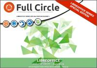
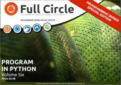
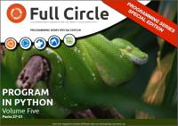

Inkscape
Número 2 - 2013 agosto
Descarga (PDF 4,58 MB inglés)

Inkscape
Número 1 - 2013 agosto
Descarga (PDF 7,47 MB inglés)

LibreOffice
Número 4 - 2013 julio
Descarga (PDF 1,47 MB inglés)

LibreOffice
Número 3 - 2013 julio
Descarga (PDF 1,95 MB inglés)

LibreOffice
Número 2 - 2013 abril
Descarga (PDF 7,95 MB inglés)

LibreOffice
Número 1 - 2013 abril
Descarga (PDF 8,37 MB inglés)

Program in Python
Número 6 - 2013 febrero
Descarga (PDF 4,02 MB inglés)

Program in Python
Número 5 - 2013 enero
Descarga (PDF 4,96 MB inglés)